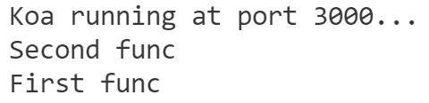

1.2 代码初探
Hello World 代码解析
我们已经成功输出了 Hello World，这是学习任何一个语言/工具，都会经历的第一步。可能前面的代码让你不知道发生了什么，下面我们就来解释一下 Hello World 的代码。
const koa = require('koa');
const app = new koa();
app.use(async (ctx, next) => {
await next();
ctx.response.body = 'hello world';
});
app.listen(3000, () => {
console.log('Koa running at port 3000...');
});
首先我们导入了 koa 包，然后我们实例化了一个 koa 对象。
app.use() 的作用是，对于每一个 HTTP 请求，koa 将调用传入的异步函数。其中 ctx 是 koa 包装的关于 HTTP 请求的 request 和 response 变量；next 是挂载在 koa 上的异步函数。下面我们会详细讲讲这个 next 究竟有什么用。
app.listen() 声明 koa 监听哪一个端口号。它可以只传入一个 PortNum 参数，也可以传入一个回调函数，如上例中的箭头函数。
那么，这样我们就知道一个简单 koa server 的启动流程了：
- 导入 koa 并实例化
- 编写对于 HTTP 请求的处理函数
- 设置监听端口号
next 是什么
实践出真知，我们更新一下我们的代码:
const koa = require('koa');
const app = new koa();
app.use(async (ctx, next) => {
await next();
console.log('First func');
ctx.response.body = 'hello world';
});
app.use(async (ctx, next) => {
console.log('Second func');
});
app.use(async (ctx, next) => {
console.log('Third func');
});
app.listen(3000, () => {
console.log('Koa running at port 3000...');
});
你可能会猜测，输出是 First func Seconde func Third func，但并不是，输出如下

这就是 koa 的独特处理机制。koa 将 app.use() 中传入的函数，组成一条异步函数链，针对每一个 HTTP 请求，从这条链开始调用函数处理。但是，这个函数链是通过 next 组织起来的。也就是说，在一个异步函数中调用
await next()，koa 会先执行后面的异步函数链，等下一个函数处理完毕，再继续进行处理。所以，我们的输出是 Second func First func。那么为什么 Third func 没有输出？因为我们没有在第二个函数处调用 await next()，在其之后的所有函数，都不再被调用。
在 koa 中，每个异步函数，就称作 middleware。所以在编写 middleware 的时候，需要注意 next 调用和调用时机。
理解了 middleware，那么 koa 就入门啦~